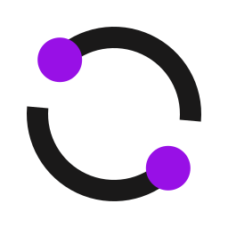

ORION reçoit un ordre sur n'importe lequel de vos appareils et l'exécute sur n'importe quel autre. Un écosystème souverain sans cloud tiers imposé, du bot Telegram léger jusqu'à un Jarvis autonome.
Service systemd · Agent Python · Exécution de scripts · Transferts sécurisés

ORION COREApplication Flet · Extension native Dart · Réveil FCM · Télémétrie
Une rupture avec les assistants conventionnels : fini l'asymétrie maître/esclave et la dépendance aux clouds opaques.
Chaque appareil est à la fois client et exécutant. Depuis votre smartphone, ordonnez au PC d'envoyer un contrat ou de lancer un script. Depuis votre bureau, faites sonner votre smartphone silencieux ou importez vos photos du jour instantanément.
Vos données personnelles et fichiers ne transitent par aucun serveur privé tiers. Toutes les liaisons à distance s'appuient sur un réseau privé maillé Tailscale (WireGuard) et du chiffrement TLS de bout en bout avec contrôle d'accès strict.
Chaque version (V0 à V9) apporte une capacité directement utilisable au quotidien et introduit un lot ciblé de technologies. On ne passe à l'étape suivante que lorsque la précédente est testée, documentée et expliquée ligne par ligne.
Un cœur unifié sous FastAPI, orchestrant des agents légers via un bus d'événements temps réel.
Le cerveau central : gestion des identités (Argon2id / JWT / TOTP), registre des appareils appairés, file de commandes asynchrones, base PostgreSQL et cache Redis pour la présence immédiate.
Messagerie ultra-légère et chiffrée. Permet la détection de déconnexion inattendue via le mécanisme de testament (*Last Will*) et le passage transparent des pare-feux sans ouverture de port.
Une interface moderne écrite en Python avec Flet, compilée pour le bureau Linux, Android et le web. Accès aux fonctions natives du smartphone via une micro-extension Dart dédiée.
Découvrez en détail chacune des étapes jalonnant le développement d'ORION, leurs capacités et leurs technologies.
Le socle de développement professionnel
Mise en place de l'environnement complet de travail sous Linux, configuration de Python 3.12+, pipeline d'intégration continue GitHub Actions avec Ruff et pytest, et outillage monorepo.
Une première victoire concrète en trois semaines
Un bot Telegram hébergé sur le PC qui permet d'explorer l'arborescence de fichiers, de télécharger des documents et d'en recevoir à distance via 4G sans ouvrir de port réseau grâce au *long polling*.
La fondation multi-appareils sans compromis
Le téléphone et le PC se pilotent mutuellement dans les deux sens : transfert de fichiers volumineux, exécution de scripts approuvés, capture d'écran à distance, sonnerie du smartphone et statut en direct.
Recherche sémantique et mémorisation contextuelle
Introduction d'une base vectorielle locale et d'un modèle d'embeddings pour retrouver n'importe quel fichier par son sens (« Où est ma facture EDF de juillet ? ») et retenir les préférences de l'utilisateur.
Boucle agentique LLM et exécution multi-étapes
ORION acquiert la capacité de décomposer une commande complexe en sous-tâches, de choisir les outils appropriés (Tool Calling / MCP) et d'exécuter des plans avec validation humaine obligatoire pour les actions destructrices.
Interaction vocale instantanée et naturelle
Ajout de la détection du mot d'activation (*Wake Word*), de la transcription rapide de la voix en texte (STT) et de la synthèse vocale expressive (TTS) en streaming continu.
Anticipation, alertes et synchronisation des notifications
ORION ne se contente plus de répondre : il surveille la santé de vos machines, prépare un briefing chaque matin, vous alerte d'une anomalie et affiche les SMS/notifications de votre téléphone sur votre écran PC.
Compréhension visuelle et OCR contextuel
Intégration de la vision par ordinateur : capture sécurisée de zones d'écran, extraction de texte sur images (OCR) et contrôle miroir de l'écran du smartphone sur le poste de travail.
Passerelle domotique et contrôle d'objets connectés
Connexion avec Home Assistant et les protocoles Zigbee/Matter : ORION ajuste la lumière de votre bureau quand vous travaillez, éteint les pièces inutilisées ou gère le thermostat.
Collaboration multi-agents et division du travail
Délégation à une escouade d'agents spécialisés : un agent documentaliste qui lit vos PDF, un agent administrateur qui prépare vos sauvegardes, et un coordinateur central qui orchestre le tout.
L'aboutissement : un assistant fluide, discret et digne de science-fiction
Harmonisation complète de tous les modules : interface unifiée au design futuriste, autonomie encadrée pour anticiper vos besoins, résilience totale face aux pannes réseau et finition irréprochable.
Pas besoin d'attendre la V9 pour profiter d'ORION. Le bot V0.5 tourne déjà en tâche de fond sur votre PC et transforme votre messagerie Telegram en télécommande de fichiers sécurisée.
Parce qu'un assistant puissant ne doit jamais devenir une brèche de sécurité pour vos données personnelles.
Chaque opération d'accès disque est bridée par un garde-fou `safe_path`. Interdiction totale des traversées relatives (`../`) et verrouillage dans les dossiers autorisés de l'utilisateur.
Hachage des mots de passe en Argon2id, jetons d'accès JWT limités à 15 minutes, jetons de rafraîchissement à usage unique stockés dans le Keystore Android, et validation 2FA TOTP.
Aucun port entrant ouvert sur votre box Internet. Toutes les communications réseau hors Telegram transitent par un tunnel WireGuard chiffré de bout en bout réservé à vos appareils.